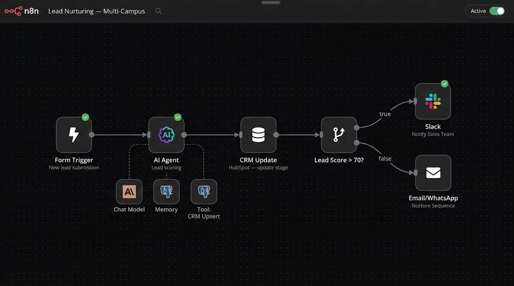
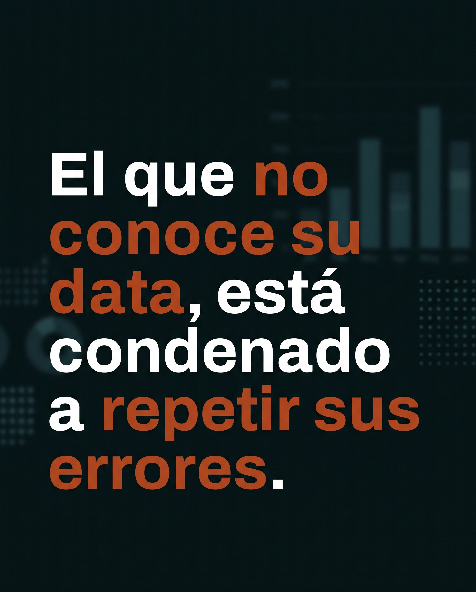

Caso 01 — Resultados
Institución educativa · multi-sede
Ecosistema comercial completo
- Reto
- Fricción entre marketing y ventas y procesos no estandarizados entre sedes.
- Estrategia
- Construcción de infraestructura MarTech —CRM, automatización e IA— integrando tracking y nutrición de leads de punta a punta.
- Resultado
- CPL a la baja en un rango de 15–20% y ~20% más leads calificados año contra año.
Los resultados que obtuvo la estrategia se han anonimizado y expresados como índice base 100. Sin cifras absolutas ni nombres de cliente.

Automatización construida: nutrición y scoring de leads con IA.

Marketing y ventas trabajaban por separado: marketing entregaba volumen de contactos y cada sede los procesaba a su manera, sin un criterio común para decidir qué lead estaba listo para contactar. El resultado eran oportunidades que se enfriaban, retrabajo y discusiones sobre la calidad de la demanda en lugar de sobre cómo cerrarla.
La infraestructura MarTech —CRM como registro único, automatización para enrutar y nutrir, e IA para el scoring— atacó ese problema de raíz: hoy cada lead entra por un tracking unificado, se califica con la misma lógica en todas las sedes y llega a ventas con contexto completo y un SLA de contacto. El impacto medible: un CPL entre 15% y 20% más bajo y alrededor de 20% más leads calificados año contra año.
Infraestructura MarTech integrada de punta a punta
Arquitectura del ecosistema construido — tracking, CRM, automatización e IA conectando marketing con ventas entre sedes.